We have noted that the covalent bonds of molecules are not rigid , but are more like stiff springs that can be stretched and bent. At ordinary temperatures these bonds vibrate in a variety of ways, and the vibrational energies of molecules may be assigned to quantum levels in the same manner as are their electronic states. Transitions between vibrational energy states may be induced by absorption of infrared radiation, having photons of the appropriate energy. It requires more energy to stretch (or compress) a bond than to bend it, and as might be expected, the energy or frequency that characterizes the stretching vibration of a given bond is proportional to the bond dissociation energy.
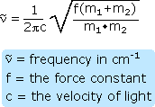
The equation on the right describes the major factors that influence the stretching frequency of a covalent bond between two atoms of mass m1 and m2 respectively. The force constant (f) is proportional to the strength of the covalent bond linking m1 and m2. In the analogy of a spring, it corresponds to the spring's stiffness. For example, a C=N double bond is about twice as strong as a C-N single bond, and the C≡N triple bond is similarly stronger than the double bond. The infrared stretching frequencies of these groups vary in the same order, ranging from 1100 cm-1 for C-N, to 1660 cm-1 for C=N, to 2220 cm-1 for C≡N.
Approximate Infrared Stretching Frequencies
B-H2400 cm-1
C-H3000 cm-1
N-H3400 cm-1
O-H3600 cm-1
F-H4000 cm-1
Al-H1750
Si-H2150
P-H2350
S-H2570
Cl-H2890
Ge-H2070
As-H2150
Se-H2300
Br-H2650
If one of the bonded atoms (m1 or m2) is a hydrogen (atomic mass =1), the mass ratio in the equation is roughly unity, but for two heavier atoms it is much smaller. Consequently, C-H, N-H and O-H bonds have much higher stretching frequencies than do corresponding bonds to heavier atoms. Other X-H stretching frequencies are shown in the table to the left, the trends observed being due chiefly to differences in the force constants. The mass effect on stretching frequencies is particularly evident when deuterium isotope equivalents are compared with corresponding hydrogen functions. Thus, the stretching frequency of a free O-H bond is 3600 cm-1, but the O-D equivalent is lowered to 2600 cm-1. Since deuterium has a mass = 2, the mass term in the equation changes fron 1 to 1/2, and the frequency is reduced by the square root of 2. In this discussion we have focussed on stretching vibrations, and it should be noted that bending vibrations may be treated in a similar fashion.
Not all molecular vibrations lead to observable infrared absorptions. In general, a vibration must cause a change in the charge distribution within a molecule to absorb infrared light. The greater the change in charge distribution, the stronger the absorption.
The use of infrared spectroscopy for determining the substitution pattern of alkenes is illustrated by the following data, and the spectra examples underneath. Stretching absorptions are marked in blue, bending absprptions in green. Overtones are colored orange. The 3000 cm-1 separation between sp2 and sp3 C-H stretching modes is clearly evident. By clicking on any of the five structural names in the first column, a corresponding spectrum will be displayed beneath the table.
Stretching Vibrations
Bending Vibrations
Alkene Substitution
Range (cm-1)
Intensity
Assignment
Mono-Alkyl (vinyl group)R-CH=CH2
Di-Alkyl (cis)RCH=CHR
Di-Alkyl (trans)RCH=CHR
Di-Alkyl (geminal)R2C=CH2
Tri-AlkylR2C=CHR
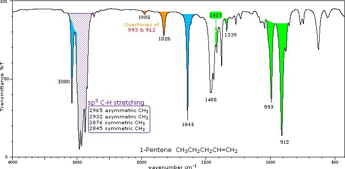
The use of infrared spectroscopy for determining the substituent pattern of substituted benzene rings is illustrated by the following data, and the spectra examples underneath. Stretching absorptions are marked in blue, bending absprptions in green. The 3000 cm-1 separation between sp2 and sp3 C-H stretching modes is clearly evident. By clicking on any of the ten structural terms in the first column, a corresponding spectrum will be displayed beneath the table.
Arene Substitution
Mono-Alkyl (R-C6H5)
Di-Alkyl (R2C6H4)
Tri-Alkyl (R3C6H3)
Tetra-Alkyl (R4C6H2)
Penta-Alkyl (R5C6H)
Several sharp, weaker absorptions in the 950 to 1250 range are due to in-plane C-H bending. These are not diagnostically useful, except for indicating a substituted benzene ring. Weak overtone and combination tone absorptions are found in the 1600-2000 region and are colored orange. These are sometimes used for identification, but are only seen in concentrated samples.
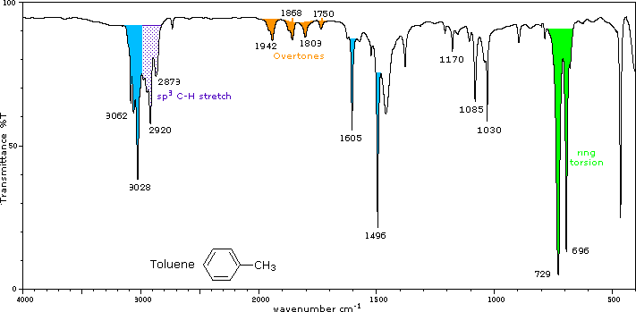
The O-H stretching absorption of the hydroxyl group is sensitive to hydrogen bonding. In the gas phase and in dilute CCl4 solution (0.01 M) small to moderate sized alcohols exhibit a sharp absorption in the 3620 to 3670 cm-1 region. In more concentrated solution, or as a pure liquid, hydrogen bonding of the hydroxyl groups to each other occurs, and this lowers and broadens the stretching frequencies of the participating O-H bonds. This change is illustrated below for 1-hexanol. The O-H stretching absorption is exclusively monomeric in the gas phase, but in moderately dilute CCl4 solution both monomeric and hydrogenbonded absorptions are evident. Dimeric clusters shift the absorption frequency to 3500 cm-1, but polymeric associations are shifted further, 3200 to 3500 cm-1, and broadened. In the pure liquid the polymeric absorption band dominates this region of the spectrum. Note that the typical C-H stretching absorptions near 2950 and 2870 cm-1 remain relatively unchanged for the three samples shown below.
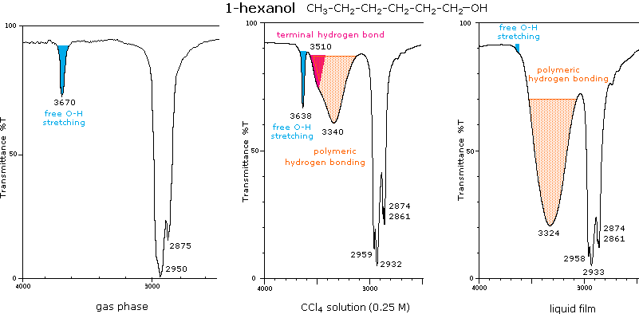
Molecules having both hydrogen bonding donors and acceptors located so that intramolecular hydrogen bonding is favored, display slightly broadened O-H stretching absorption in the 3500 to 3600 cm-1 range. The spectrum of vanillin shows this for the phenolic hydroxyl, which is hydrogen bonded to the adjacent ether oxygen.
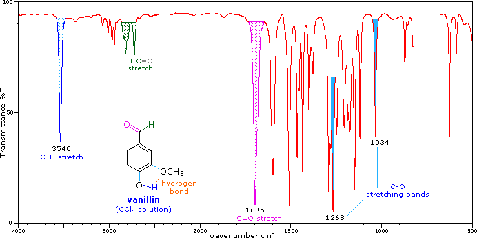
Alcohols also display C-O stretching absorption at 970 to 1250 -1. This is marked in the preceding spectrum along with the ether C-O absorptions; and the following spectrum of cyclohexanol shows two such absorptions, coming from the equatorial and axial conformers. It is possible to assign each of these absorptions to a specific conformer by examining the spectra of the corresponding cis and trans-4-tert-butylcyclohexanol configurational isomers (click on the appropriate structure or name to see its spectrum replace that of cyclohexanol). As expected, the equatorial C-O absorption at 1068 is relatively stronger than the axial C-O absorption at 970, but a reliable analysis of the data requires knowledge of the molar absorptivities of each of the stretching vibrations.
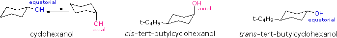
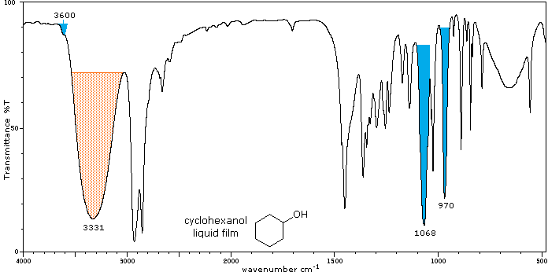
Some interesting features are also present in the O-H stretching absorptions of these compounds. The equatorial -OH group in the trans-isomer appears as a typical polymeric hydrogen bonded envelope near 3300 cm-1(shaded orange). A smaller peak at higher frequency (light blue) is presumed due to less associated clusters. The cis isomer, on the other hand, has a more hindered hydroxyl group which adopts some conformations having smaller hydrogen bonded clusters. The O-H stretching absorption band is therefore split into two (shaded orange and blue).
The carboxyl group is associated with two characteristic infrared stretching absorptions which change markedly with hydrogen bonding. The spectrum of a CCl4 solution of propionic acid (propanoic acid), shown below, is illustrative. Carboxylic acids exist predominantly as hydrogen bonded dimers in condensed phases. The O-H stretching absorption for such dimers is very strong and broad, extending from 2500 to 3300 cm-1. This absorption overlaps the sharper C-H stretching peaks, which may be seen extending beyond the O-H envelope at 2990, 2950 and 2870 cm-1. The smaller peaks protruding near 2655 and 2560 are characteristic of the dimer. In ether solvents a sharper hydrogen bonded monomer absorption near 3500 cm-1 is observed, due to competition of the ether oxygen as a hydrogen bond acceptor. The carbonyl stretching frequency of the dimer is found near 1710 cm-1, but is increased by 25 cm-1 or more in the monomeric state. Other characteristic stretching and bending absorptions are marked in the spectrum.
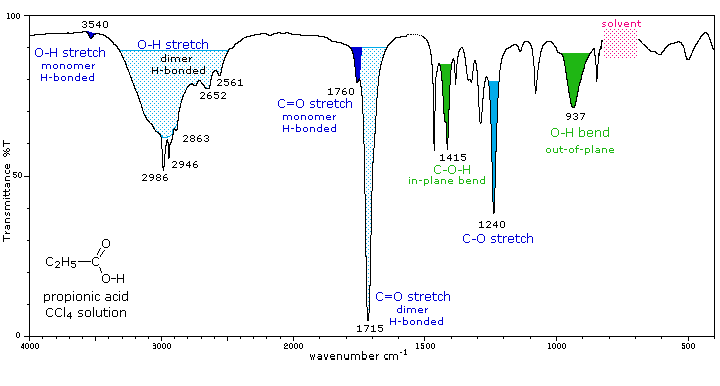
The buttons beneath the spectrum will display spectra for propionic acid as a pure liquid and in the gas phase. The absorptions in the liquid film spectrum are stronger and broader than those in solution, but are in general the same. The broad O-H bend at 935 cm-1, for example is typical of the dimeric species. The gas phase spectrum is remarkable for the absence of dimer absorptions, although at higher pressures these are present.
The infrared spectrum of aniline is shown beneath the following table. By clicking the "Toggle 1°-Amine" button, solution and gas phase spectra will be displayed sequentially, along with the spectrum of cyclohexylamine, an aliphatic 1°-amine. The "Toggle 2°-Amine" and "Toggle 3°-Amine" buttons display illustrative spectra for these classes of amines. Some of the characteristic absorptions for C-H stretching and aromatic ring substitution are also marked, but not colored.
Amine Class
Primary (1°)
The N-H stretching absorption is less sensitive to hydrogen bonding than are O-H absorptions. In the gas phase and in dilute CCl4 solution free N-H absorption is observed in the 3400 to 3500 cm-1 region. Primary aliphatic amines display two well-defined peaks due to asymmetric (higher frequency) and symmetric N-H stretching, separated by 80 to 100 cm-1. In aromatic amines these absorptions are usually 40 to 70 cm-1 higher in frequency. A smaller absorption near 3200 cm-1 (shaded orange in the spectra) is considered to be the result of interaction between an overtone of the 1600 cm-1 band with the symmetric N-H stretching band. C-N stretching absorptions are found at 1200 to 1350 cm-1 for aromatic amines, and at 1000 to 1250 cm-1 for aliphatic amines.
Strong in-plane NH2 scissoring absorptions at 1550 to 1650 cm-1, and out-of-plane wagging at 650 to 900 cm-1 (usually broad) are characteristic of 1°-amines.
Secondary (2°)
Secondary amines exhibit only one absorption near 3420 cm-1. Hydrogen bonding in concentrated liquids shifts these absorptions to lower frequencies by about 100 cm-1. Again, this absorption appears at slightly higher frequency when the nitrogen atom is bonded to an aromatic ring. The C-N absorptions are found in the same range, 1200 to 1350 cm-1(aromatic) and 1000 to 1250 cm-1 (aliphatic) as for 1°-amines.
A weak N-H bending absorption is sometimes visible at 1500 to 1600 cm-1. A broad wagging absorption at 650 to 900 cm-1 may be discerned in liquid film samples.
Tertiary (3°)
No N-H absorptions. The C-N absorptions are found in the same range, 1200 to 1350 cm-1 (aromatic) and 1000 to 1250 cm-1 (aliphatic) as for 1°-amines.
Aside from the C-N stretch noted on the left, these compounds have spectra characteristic of their alkyl and aryl substituents.
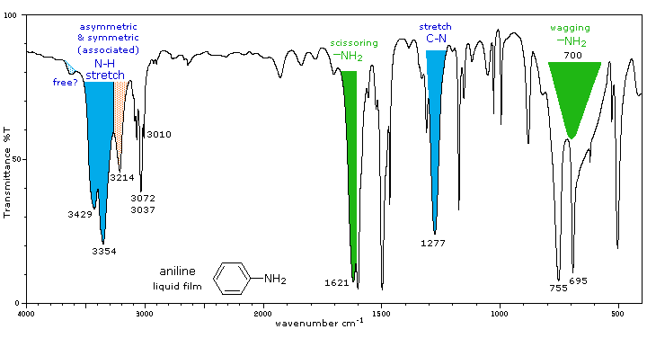
Toggle 1°-Amines
Toggle 2°-Amines
Toggle 3°-Amines
Amines are bases, and their corresponding conjugate acid "onium" salts are often the form in which they are commonly encountered. These derivatives display strong, broad N-H stretching absorptions in the 2250 to 3000 cm-1 region, with 1°-ammonium salts absorbing at the high frequency end, where overlap with C-H absorption occurs. Salts of 1° and 2°-amines also exhibit strong bending absorptions in the range of 1500 to 1600 cm-1, but the corresponding band from 3°-ammonium salts is relatively weak.
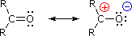
For simple aldehydes and ketones the stretching vibration of the carbonyl group gives rise to a strong and distinctive infrared absorption at 1710 to 1740 cm-1. As noted in the diagram on the right, the dipole moment of this function is increased on stretching (single bond character is greater), and this results in a strong absorption. Since alkyl substituents stabilize the carbocation character of the ionic contributer, ketone carbonyls have slightly lower stretching frequencies, 1715 ± 7 cm-1, compared with aldehydes, 1730 ± 7 cm-1. The values cited here are for pure liquid or CCl4 solution spectra. Hydrogen bonding solvents will lower these frequencies by 15 to 20 cm-1.
Three factors are known to perturb the carbonyl stretching frequency:
1. Conjugation with a double bond or benzene ring lowers the stretching frequency. The 30 to 40 cm-1 decrease in frequency is illustrated by the following examples. The stretching frequency of the conjugated double bond is also lowered (blue notation) and may be enhanced in intensity. The cinnamaldehyde example (far right) shows that extended conjugation further lowers the absorption frequency, although not to the same degree.
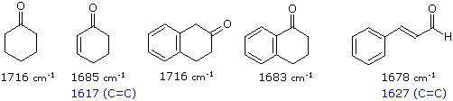
2. Incorporation of the carbonyl group in a small ring (5, 4 or 3-membered), raises the stretching frequency. The increase in frequency ranges from 30 to 45 cm-1 for a 5-membered ring, to 50 to 60 cm-1 for a 4-membered ring, and nearly 130 cm-1 for a 3-membered ring. This shift also occurs in the presence of the previous conjugative lowering of the stretching absorption. Examples of this effect are shown below.
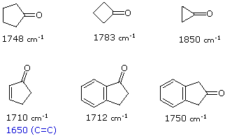
3. Changing an alkyl substituent of a ketone for an electron releasing or withdrawing group. This effect, which may shift the carbonyl stretching frequency up or down, is particularly important when an alkyl substituent is replaced by a hetero atom such as N, O or X (halogen). Such cases will be discussed as carboxylic acid derivatives. The following examples show the influence of a strongly electron withdrawing group (-CCl3) and a conjugatively electron donating group (-OCH3).
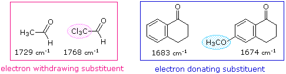
To understand the functioning of these factors consider the following analyses:
1. Conjugation extends the dipolar character of the carbonyl group to the double bond (or aromatic ring) so that the beta-carbon atom shares the positive character of the carbonyl carbon. As illustrated by the following resonance equation, this not only explains conjugate addition reactions of nucleophiles, but also suggests that the carbonyl double bond has slightly more single bond character than does an unconjugated function. The bond energy (and force constant) of the conjugated C=O group is correspondingly reduced, and this results in a lower stretching frequency.
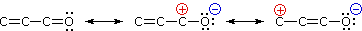
2. Under ideal conditions the carbon atom of a carbonyl group is essentially sp2 hybridized, which implies that the bond angles will be 120° and the C-O sigma bond has 33% s-character. If this group is incorporated in a small ring, the C-CO-C bond angle is reduced to 108° (5-membered ring), 90° (4-membered ring) or 60° (3-membered ring). When this happens, the C-C bonds of the ring assume greater p-character and the C-O sigma bond has correspondingly greater s-character. The double bond of the carbonyl group is therefore shorter and stronger, and exhibits a larger stretching frequency.
3. Electron donating substituents on the carbonyl group stabilize the ionic resonance contributor, and increase the single bond character of the C=O bond. The stretching frequency is therefore decreased, as noted in the right hand example below. Electron withdrawing groups have an opposite influence, and increase the stretching frequency of the carbonyl group. Trichloroacetaldehyde (left below) provides a good example.
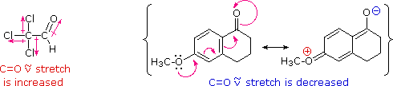
Starting with the spectrum of cyclohexanone, infrared spectra of six illustrative ketones will be displayed below on clicking the "Toggle Spectra" button. The difference between liquid film and solution spectra is shown for cyclohexanone, but all other compounds are examined as liquid films. The carbonyl stretching absorption is colored blue, and characteristic overtones near 3400 cm-1, which are only prominent in liquid phase spectra, are colored orange.
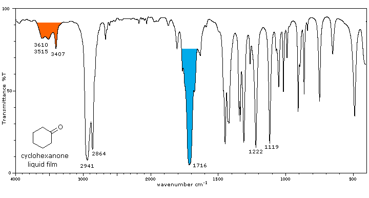
The influence of heteroatom substituents on the reactivity of carbonyl functions toward nucleophiles was discussed earlier with respect to carboxylic acid derivatives. A useful relationship exists between the reactivity of these derivatives and their carbonyl stretching frequencies. Thus, the very reactive acyl halides and anhydrides absorb at frequencies significantly higher than ketones, whereas the relatively unreactive amides absorb at lower frequencies. These characteristics are listed below. Infrared spectra of many carboxylic acid derivatives will be displayed in the figure below the table by clicking the appropriate buttons presented there.
Carbonyl Derivative
Carbonyl Absorption
Comments
Acyl Halides (RCOX)X = FX = ClX = Br
C=O stretch1860 ± 20 cm-11800 ± 151800 ± 15
Acid Anhydride, (RCO)2Oacyclic6-membered ring5-membered ring
C=O stretch (2 bands)1750 & 1820 cm-11750 &18201785 & 1865
Esters & Lactones (RCOOR')esters6-membered lactone5-membered lactone4-membered lactone
C=O stretch 1740 cm ± 10 cm-11740 cm ± 101765 cm± 51840 cm ± 5
Amides & Lactams (RCONR2)1° & 2°-amides3°-amides6-membered lactams5-membered lactams4-membered lactams
C=O bands1510 to 1700 cm-1 (2 bands)1650± 15 (one band)1670 ± 10 (one band)1700 ± 15 1745 ± 15
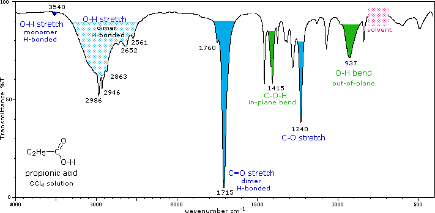
Toggle Acyl Halides
Toggle Anhydrides
Toggle Esters
Toggle Amides
Show Carboxylate